Lab 7: The Advanced Encryption Standard
Ivan Jimenez Pineda | ijimenezpineda@g.hmc.edu | October 27, 2026
Introduction
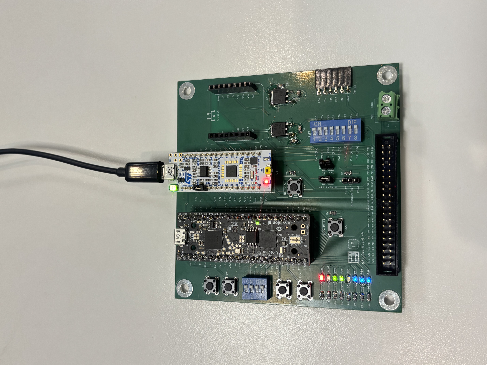
Picture of the AES-128 FPGA Accelerator Hardware setup showing indicator LED illuminated on successful ciphertext verification.In this lab, a hardware accelerator for 128-bit Advanced Encryption Standard was designed and implemented on an iCE40 UP5K FPGA, interfacing with an STM32L432KC microcontroller over Serial Peripheral Interface. Following the specifications outlined in the NIST FIPS-197 standard, the MCU transmits a 128-bit plaintext message and a 128-bit cipher key to the FPGA over SPI while asserting a load control signal. Once the transfer completes, the load signal is deasserted and the FPGA sequentially executes the ten rounds of the AES-128 algorithm byte substitution (SubBytes), row shifting (ShiftRows), column mixing (MixColumns), round key addition (AddRoundKey), and round key generation (KeyExpansion). Upon completion, the FPGA asserts a done flag and shifts the resulting 128-bit ciphertext back to the MCU over SPI, which verifies the output against the expected FIPS-197 Appendix B test vector and illuminates a status LED.
Design and Testing Methodology
System Architecture
Implementing all ten rounds of AES-128 combinationally would exceed the Lookup Table capacity of the iCE40 UP5K FPGA so a single round datapath is reused across ten sequential encryption rounds. To conserve logic cells, the S-Box byte substitutions (sbox_sync) are mapped to the FPGA’s Embedded Block RAMs (EBRs) rather than combinational LUTs. Sixteen sbox_sync instances are used in parallel within aes_sub_bytes to substitute all 16 bytes of the 128-bit state simultaneously, and four sbox_sync instances are used within aes_key_expansion to perform the SubWord operation, consuming 20 of the 30 available EBR blocks on the iCE40 UP5K. Each round executes across two clock cycles:
WAITState: The current 128-bit state (XORed with the round key viaaes_add_round_key) and the rotated key word are presented to the address inputs of the 20 sbox_sync BRAM blocks.On the next rising clock edge, the substituted bytes are latched at the BRAM outputs.CALCState: At the rising clock edge,update_regsasserts to latchnext_round_keyintocurrent_round_keyandnext_mixed_textintocurrent_mixed_text(and on Round 10,shifted_textintoround_10_shifted_textto bypassMixColumnsper FIPS-197 Section 5.1).
Using this two-cycle-per-round architecture, all ten rounds complete in 21 clock cycles after load is deasserted, after which the FSM enters the RETURN state and asserts done.
MCU and FPGA SPI Interface
The provided MCU starter code configures SPI1 on pins PB3 (SCK), PB4 (MISO/SDO), and PB5 (MOSI/SDI) with clock polarity CPOL = 0 and clock phase CPHA = 0. Pin PA5 drives the LOAD signal, PA6 monitors the DONE signal from the FPGA, PA11 and PA9 / PA10 drive indicator LEDs for pass/fail verification. On the FPGA side, the internal high-speed oscillator (HSOSC) is configured with a divider of 2'b11 to supply a 6 MHz system clock (clk) to aes_corefor the combinational path through aes_row_shift and mixcolumns.
Block Diagram
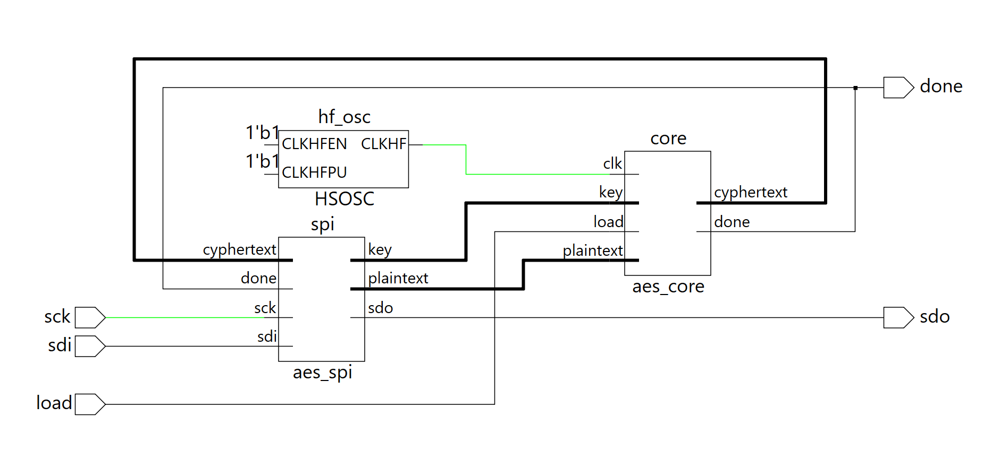
Figure 1: Top-level and submodule hardware block diagram of the AES-128 FPGA accelerator.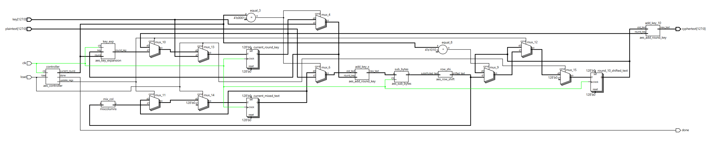
Figure 1b: Block diagram of the aes_core module.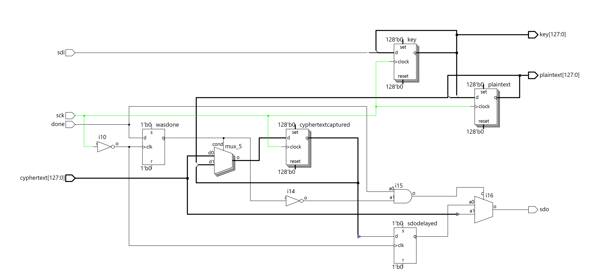
Figure 1c: Block diagram of the aes_spi module.The top-level lab7_ijp instantiates the 6 MHz HSOSC , the aes_spi shift-register interface, and aes_core. Inside aes_core, control logic is isolated in aes_controller, which outputs current_round, update_regs, and done. Multiplexers select key and plaintext during Round 1 (current_round == 4'd1), and select the registered current_round_key and current_mixed_text during Rounds 2 through 10. A final aes_add_round_key instance (add_key_10) XORs round_10_shifted_text with Round 10’s expanded key to produce the final cyphertext.
Finite State Machine Design
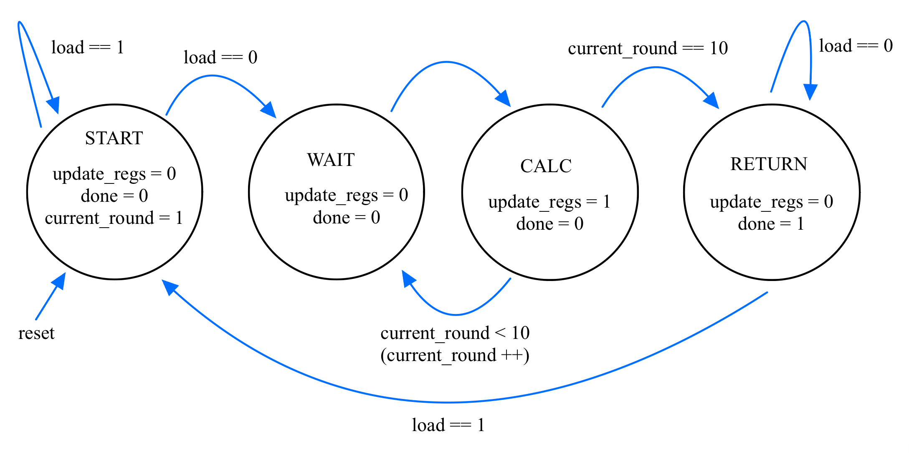
Figure 2: State transition diagram foraes_controller.
As shown in Figure 2, aes_controller has four states:
START(2'b00): Entered synchronously wheneverloadis asserted. Initializescurrent_roundto1and keepsdonelow. Transitions toWAITonceloadis deasserted (load == 0).WAIT(2'b01): Waits one clock cycle for the 20 synchronoussbox_syncEBR modules inaes_sub_bytesandaes_key_expansionto latch their substituted byte outputs. Unconditionally transitions toCALC.CALC(2'b10): Assertsupdate_regs = 1'b1to capture the newly computed round key and mixed column state (or Round 10 shifted state) on the next clock edge, and incrementscurrent_round. Transitions back toWAITifcurrent_round < 10, or toRETURNwhencurrent_round == 10.RETURN(2'b11): Holdsdone = 1'b1(withcurrent_round == 11) soaes_spican capture and shift out the finalcyphertextto the MCU. Remains inRETURNuntilloadis asserted for a new encryption request.
Results and Discussion
Testbench Simulation Waveforms
Each individual submodule was verified in QuestaSim against the official test vectors in FIPS-197 Appendix A.1 and Appendix B (plaintext = 3243f6a8_885a308d_313198a2_e0370734, key = 2b7e1516_28aed2a6_abf71588_09cf4f3c, expected = 3925841d_02dc09fb_dc118597_196a0b32).
aes_core Simulation
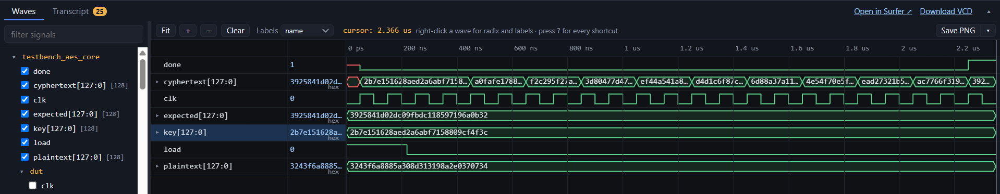
Figure 3: Waveform foraes_core_tb, showing the progression through Rounds 1–10 and final assertion of done with cyphertext matching expected (3925841d02dc09fbdc118597196a0b32).
aes_key_expansion
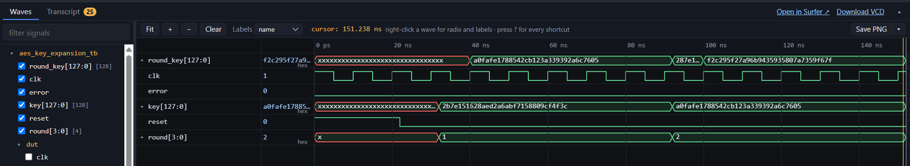
Figure 4:aes_key_expansion_tb waveform verifying Round 1 (a0fafe17_88542cb1_23a33939_2a6c7605) and Round 2 (f2c295f2_7a96b943_5935807a_7359f67f) key schedule generation.
aes_add_round_key
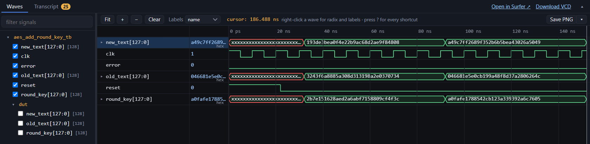
Figure 5:aes_add_round_key_tb waveform verifying bitwise XOR round key addition.
aes_sub_bytes & sbox_sync
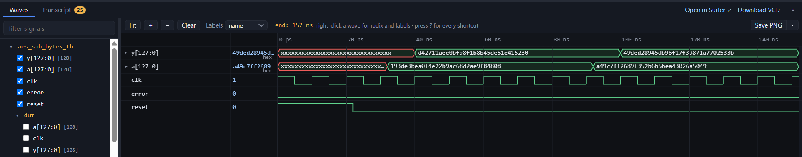
Figure 6:aes_sub_bytes_tb waveform demonstrating synchronous 1-cycle BRAM S-Box byte substitution.
aes_row_shift
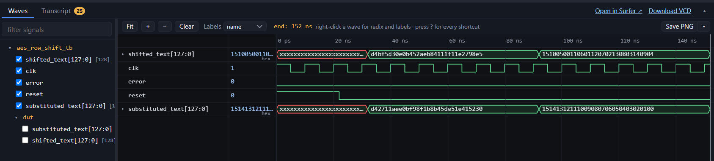
Figure 7:aes_row_shift_tb waveform verifying cyclic left-shifting of rows 0 through 3.
galoismult, mixcolumn, and mixcolumns
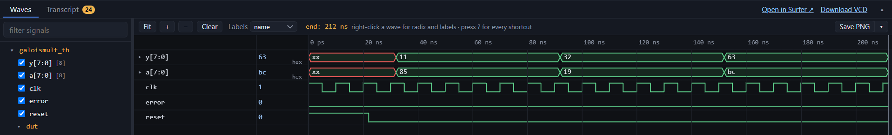
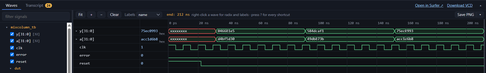
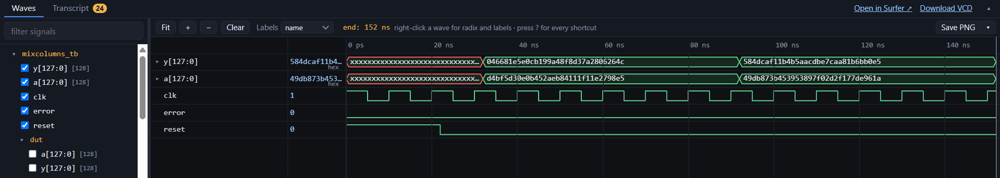
Figure 8: Waveforms for galoismult, single-column mixcolumn, and 128-bit mixcolumns against FIPS-197 Appendix B Round 1 and Round 2 intermediate states.
aes_controller
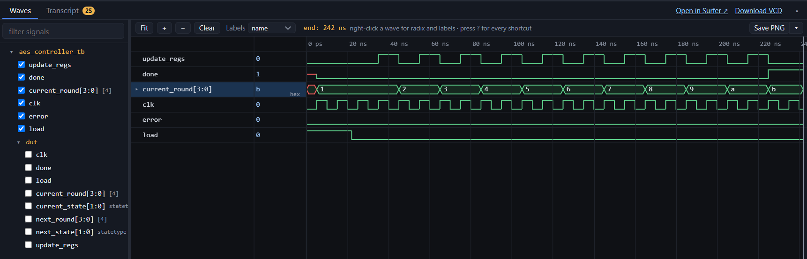
Figure 9:aes_controller_tb waveform verifying state transitions (START, WAIT, CALC, RETURN), update_regs, and done assertion at current_round == 11.
Full System (aes_spi_tb)
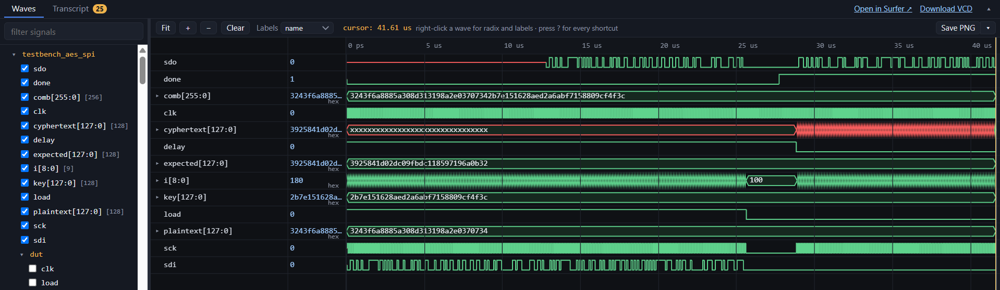
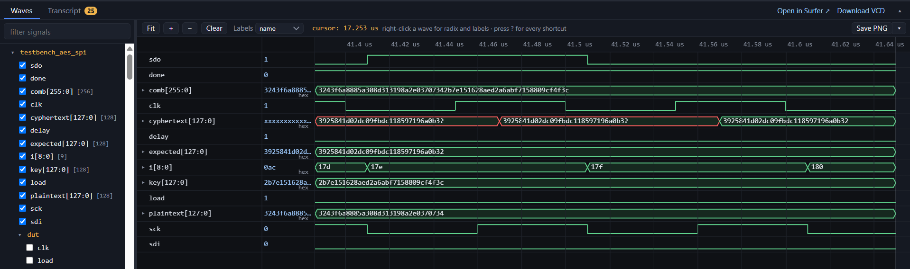
Figure 10: Full-systemaes_spi_tb waveforms showing the 256-bit SPI shift-in while load is high, AES encryption, done assertion, and 128-bit SPI shift-out of the verified ciphertext.
Oscilloscope Traces
The design was synthesized in Lattice Radiant and deployed onto the iCE40 UP5K alongside the STM32L432KC running lab7.c. Upon execution, the MCU’s success indicator LED (PA9) illuminated for both the FIPS-197 Appendix B and Appendix C.1 test vectors, confirming end-to-end hardware-accelerated encryption.
Figure 11: Hardware setup showing indicator LED illuminated on successful ciphertext verification.
 Figure 12: Oscilloscope trace of the SPI Write transaction (
Figure 12: Oscilloscope trace of the SPI Write transaction (LOAD asserted, MCU transmitting plaintext and key over MOSI).
Figure 13: Oscilloscope trace of the SPI Read transaction (DONE asserted, FPGA returning encrypted cyphertext over MISO).
AI Prototype Reflection
Output Quality & Approach:
(Prompt 1): When given the explicit FIPS-197 context, the LLM generated a highly specific, ready-to-use AES-128 KeyExpansion module. It correctly inferred the 10 rounds, hardcoded the exact Rcon values in a case statement, and implemented a clean, sequential XOR chain.
(Prompt 2): When provided only generic pseudocode, the LLM took a much more parameterized approach. It utilized generate for loops, genvar, and parameters (Nk, Nr) to unroll the logic. It also correctly inferred that the Rcon values would need to be supplied as an external array since it lacked the context of what those constants should be. The second prompt forced the LLM to use generate and genvar loops.
Synthesis: Prompt 1 correctly synthesized but Prompt 2 did not. The LLM’s output for Prompt 2 was a generic, parameterized module that would require additional context to synthesize correctly. Prompt 1’s output was a complete, synthesizable module that could be directly integrated into the larger AES datapath.
Conclusion
The hardware accelerated AES-128 encryption system met all Proficiency and Excellence specifications for Lab 7. All individual module testbenches, core simulations, full-system SPI simulations, and physical hardware logic analyzer verifications passed with zero errors.
- Requirement Status: All Proficiency and Excellence requirements for simulation, Verilog structure/style, block diagrams, and hardware execution were fully met.
- Time Spent: 19 Hours